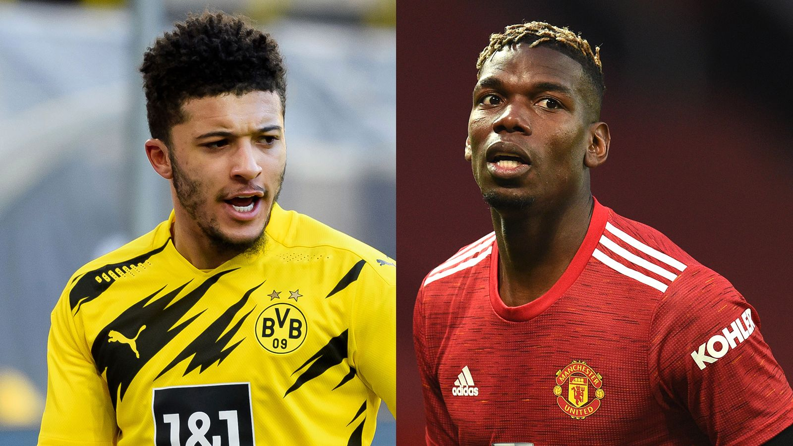
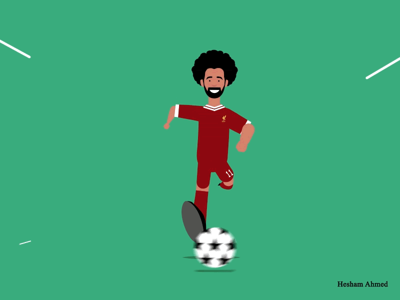
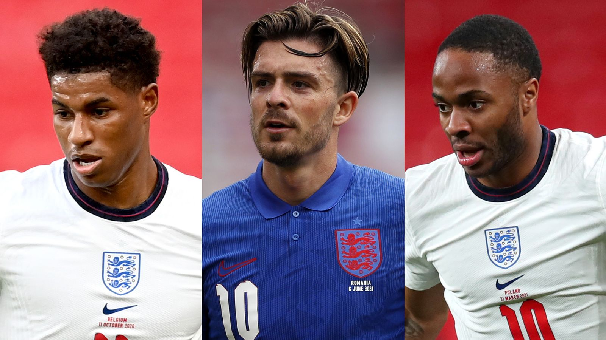

Trending News...

Football Transfer Centre LIVE! Kane, Haaland, Sancho latest
All the latest transfer news and rumours,
as reports claim Tottenham chairman Daniel Levy will demand a cash-only
deal of at least £150m for Harry Kane.
Read More...
Man Utd's Sancho talks continue |
Villa agree club-record Buendia fee | Celtic in talks over Edouard deal
Sixers can only go as far as Joel Embiid's injured knee can carry them in NBA playoffs

Manchester United open Paul Pogba contract discussions, Jadon Sancho talks continue

Sixers can only go as far as Joel Embiid's injured knee can carry them in NBA playoffs
Pogba is set to enter the final year of his deal and will be able to negotiate with clubs outside

the Premier League from January before a possible free transfer in the summer of 2022.
England vs Croatia: Who should start? Sky Sports writers pick their XIs for Wembley opener Sky Sports writers put forward their XI for
England vs Croatia, the XI they believe Southgate will select, and their explanations; Pick your XI in the team selector at the bottom of the page

Top Stories
Looking to avenge previous heartbreaks this summer...Read more..

Messi wants to sign for PSG, claims club president Read More..
Hot Topics...
Gundogan donates PL bonus to childhood club
Manchester City midfielder Ilkay
Gundogan has donated his Premier League bonus to his childhood club
in Germany to help them fund a new artificial pitch.
More..